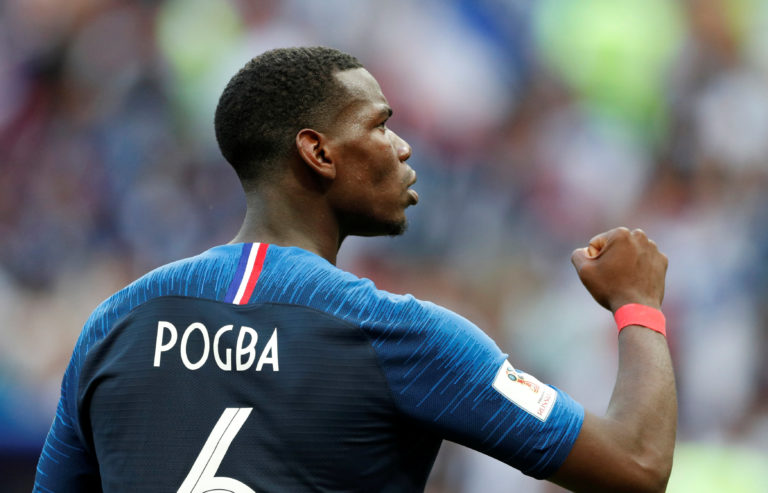

Paul Pogba not playing in the world cup due to injury?
Paul Pogba soccer player for Juventus F.C is reportedly missing the Fifa World Cup Qatar 2022. Due to a knee injury Pogba is facing, he will not be playing in the Fifa World Cup

Since coming back to Juventus from Manchester United, he hasn't played and sustained another injury. Tests in Pittsburgh and Turin revealed that the 29-year-old Pogba won't be ready for the World Cup.
“After medical exams yesterday and today, it is extremely painful to announce that Paul Pogba needs more rehabilitation after his operation.” - Rafaela Pimenta (Assistant of Paul Pogba)
Pogba, who had returned to Juventus from Manchester United two weeks before amid much fanfare, underwent surgery after tearing his meniscus during the Italian team's preseason tour of the United States in July.
But ever since, things have been difficult for him. Additionally, he was embroiled in an extortion incident involving his older brother and from his youth.